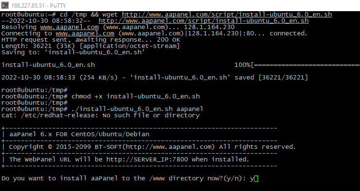

CentOS is a Linux distribution that can be used as an operating system to host web applications like WordPress. WordPress, on the other hand, is a popular content management system (CMS) that can be used to create and manage websites.
The combination of CentOS and WordPress makes for a powerful and reliable web hosting solution. CentOS provides a stable and secure platform for running web applications, while WordPress provides an easy-to-use interface for creating and
managing website content.
To use WordPress on CentOS, you need to install the LAMP stack (Linux, Apache, MySQL, and PHP) on your server. Once the LAMP stack is installed, you can download and install WordPress on your CentOS server. There are several ways to install
WordPress on CentOS, including using the command line, using a package manager like YUM, or downloading and installing it manually.
Overall, CentOS and WordPress work well together, offering a secure and powerful platform for hosting websites and web applications.
How to Install WordPress on CentOS？
aaPanel is a web hosting control panel that can be used to manage a server. Here are the steps to install aaPanel on CentOS:
1. install command: Confirm the installation of aapanel, and determine whether to configure SSH, generally we recommend not to configure ssh
yum install -y wget && wget -O install.sh http://www.aapanel.com/script/install_6.0_en.sh && bash install.sh aapanel
2. confirm install: As your site grows, you may need more resources to handle the traffic. Look for a hosting provider that allows you to easily upgrade your plan as needed without downtime.

3. Visit aaPanel:Once the installation is completed, you can access aaPanel by visiting https://your-server-ip:8888 in your web browser.
4. Deploy the integrated environment: Install and deploy an integrated environment suitable for wordpress!
5. create a new website: Let's deploy our website. If you need a "clean" WordPress site, Aapanel can do it in "one click". Simply go to Sites > Add and switch to the WordPress Deployment tab and fill in the fields provided:
6. resolve domain name: Point your domain name A to the server IP!
7. Visit the website: Visit the website, configure the database,And set your website information, administrator username and password
So far, the installation of wordpress through aaPanel is complete. There are more ways to deploy wordpress besides using the aaPanel integrated environment. Example How to Install WordPress on cPanel？